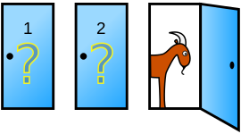

Greetings!

Hi! Welcome to my home page.
I'm Ahmad, and I was born in 1993 in Ilam, Iran.
As a carious boy in my childhood,
I rediscovered a lot of already discovered things.
During high school, my general branch
at National Organization for Development of Exceptional Talents (or simply NODET) was Mathematics and Physics.
Suddenly I grow up! then found myself studying my B.Sc. in Software Engineering
at Shiraz University, some 1000km away from my hometown.
Nowadays I'm getting my M.Sc. in Architectures of Computer Systems at Tehran Polytechnic (aka Amirkabir University of Technology), and work at Dade Pardaz Sharq.
My research interests are in the area of GPU architecture and GPU-based systems' architecture.
I speak four different languages (Arabic, Persian, Kurdish, and English) and I'm in love with Books and Instrumental Music.
Looking forward to hearning from you =)
Monty Hall Problem

Suppose you're on a game show, and you're given the choice of three doors: Behind one door is a car; behind the others, goats. You pick a door, say No. 1, and the host, who knows what's behind the doors, opens another door, say No. 3, which has a goat. He then says to you, "Do you want to pick door No. 2?" Is it to your advantage to switch your choice?